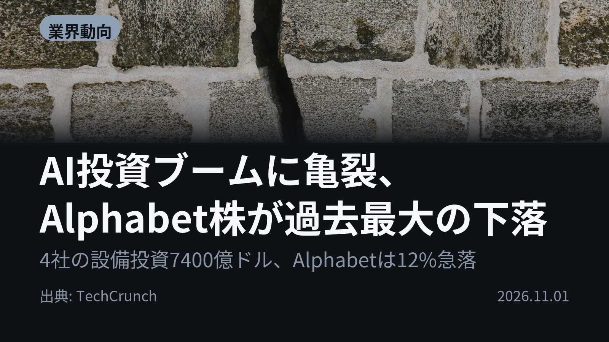
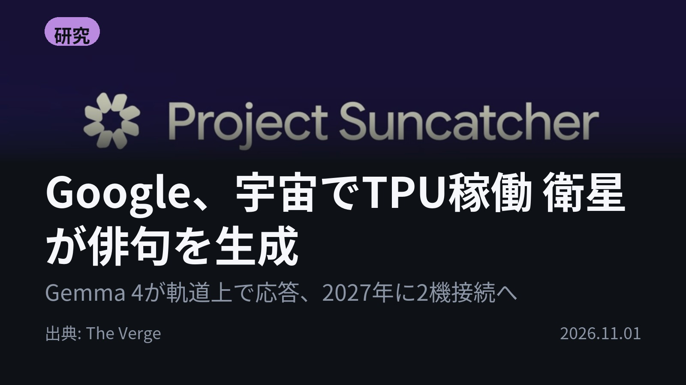
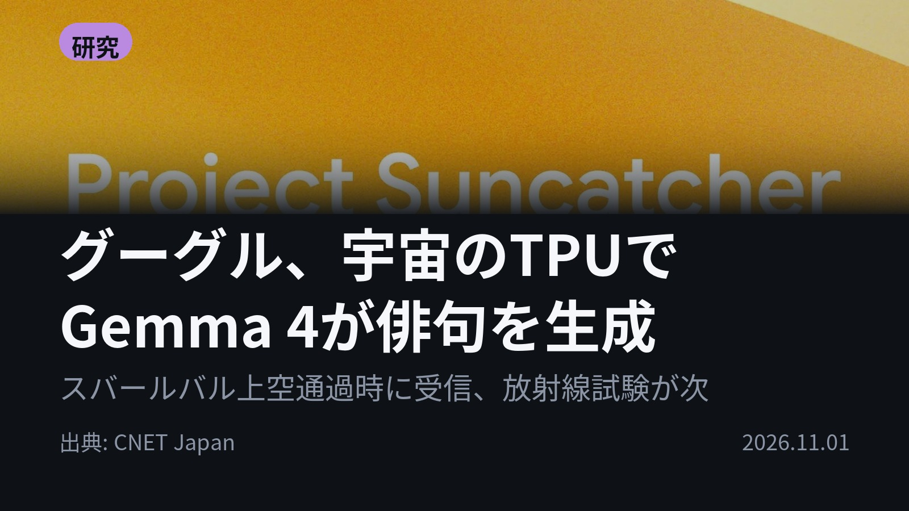
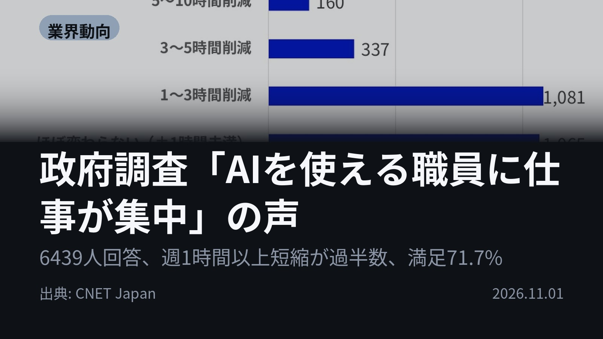
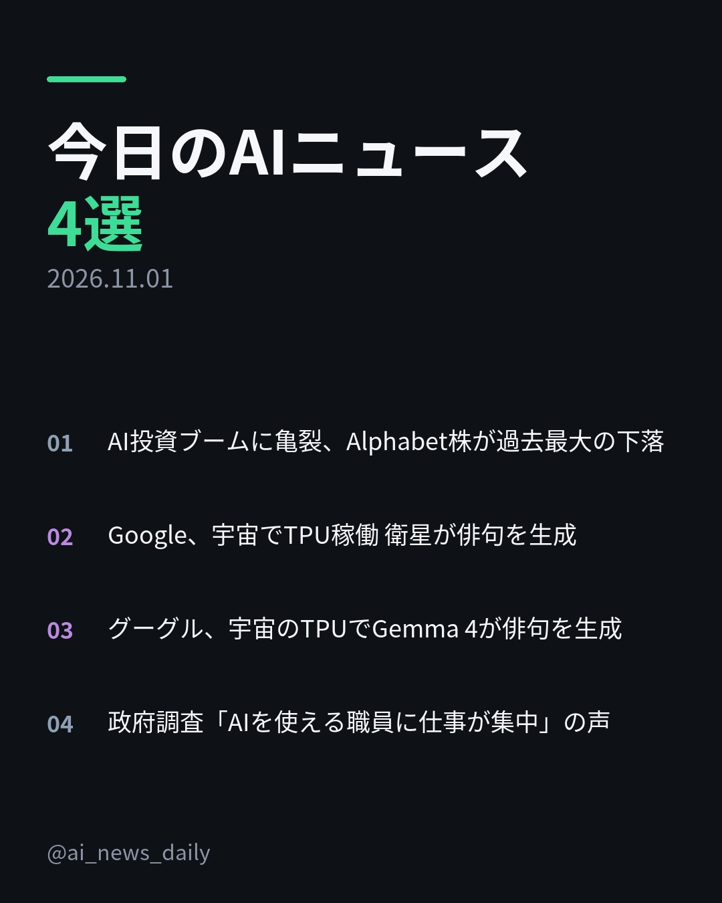
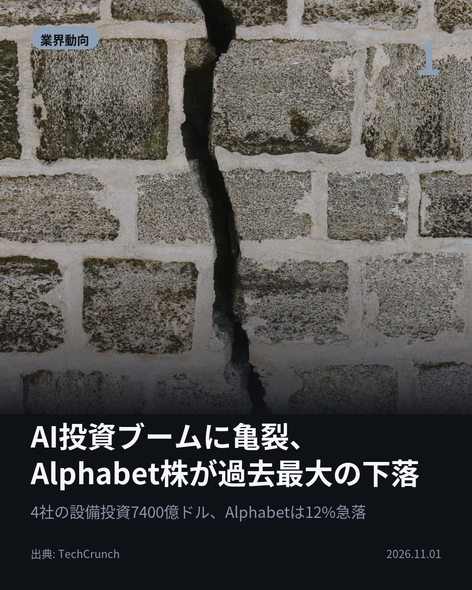
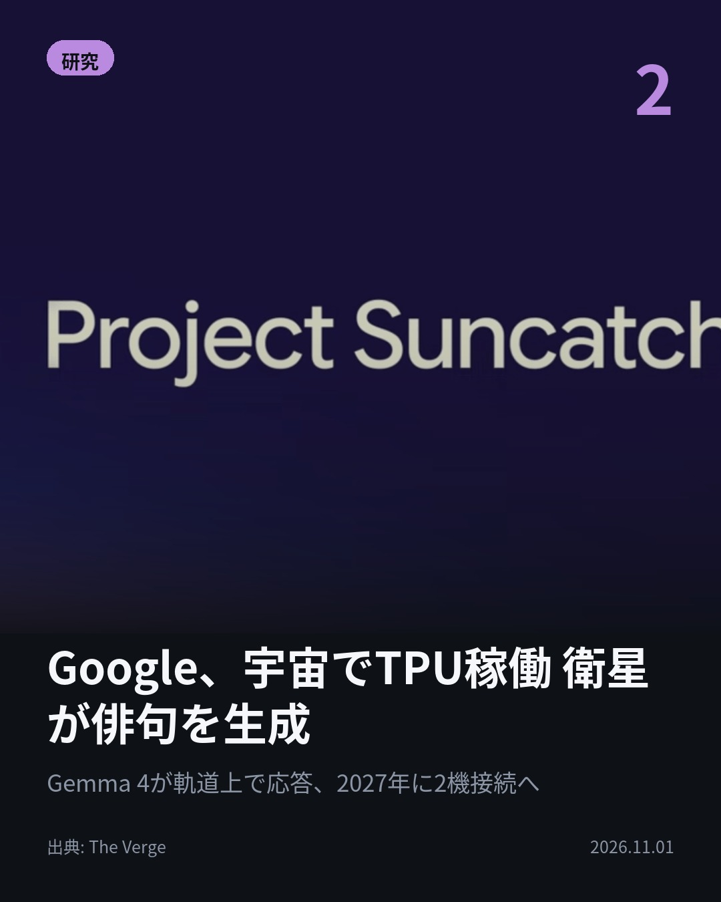
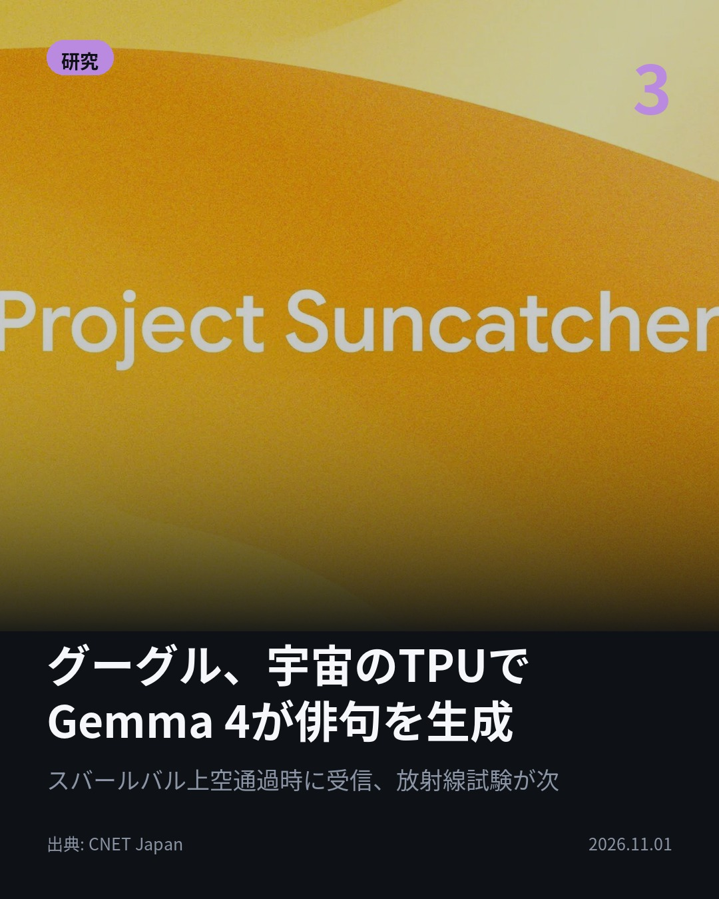
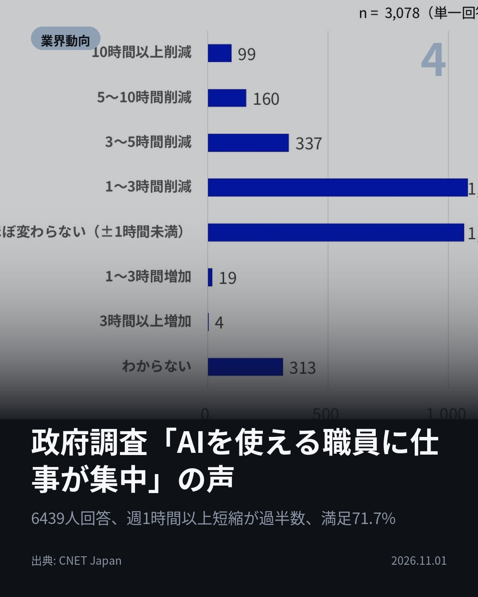

今日のAIニュース 下書き
2026-11-01 生成 11/01 09:05
⚠ ファクト照合で要確認の項目があります。
各ニュースの警告を確認してから投稿してください。
X（4投稿）
AI投資ブームに亀裂、Alphabet株が過去最大の下落
原題: Cracks are emerging in the AI spending boom

4社の設備投資、今年7400億ドル超。 Alphabet株は12%急落、過去最悪の1日で時価総額5000億ドルが消えた。 第3四半期のフリーキャッシュフローは91億ドルの赤字、検索広告の成長も12%に鈍化。 #AI #Alphabet（出典: TechCrunch）
重み 211 / 280（見た目 130字）
要確認:
［数値］7400億 — この数値の根拠が本文に見つかりません
［数値］1日 — この数値の根拠が本文に見つかりません
［数値］5000億 — この数値の根拠が本文に見つかりません
［数値］91億 — この数値の根拠が本文に見つかりません
［数値］424億 — この数値の根拠が本文に見つかりません
［数値］148億 — この数値の根拠が本文に見つかりません
［数値］21億 — この数値の根拠が本文に見つかりません
［数値］186億 — この数値の根拠が本文に見つかりません
［数値］3260億 — この数値の根拠が本文に見つかりません
［数値］3倍 — この数値の根拠が本文に見つかりません
［固有名詞］フリーキャッシュフロー — この語が本文に見つかりません
［固有名詞］TechCrunch — この語が本文に見つかりません

Google、宇宙でTPU稼働 衛星が俳句を生成
原題: Google’s satellite AI server transmits its first response to Earth

地球の上空で、衛星が一句詠んだ。 GoogleのProject Suncatcher衛星でTPUが起動、Gemma 4が宇宙を題材に俳句を生成。 次は熱と放射線への耐性を試し、2027年に2機を相互接続する。 #AI #Gemma（出典: The Verge）
重み 197 / 280（見た目 127字）
要確認:
［固有名詞］リメリック — この語が本文に見つかりません
［固有名詞］プロンプト — この語が本文に見つかりません
［固有名詞］ストレス — この語が本文に見つかりません
［固有名詞］Verge — この語が本文に見つかりません

グーグル、宇宙のTPUでGemma 4が俳句を生成
原題: グーグルのAI半導体、宇宙での動作を確認 「俳句」を生成したと発表

宇宙で詠まれた俳句、どこで受信したか。 ノルウェーのスバールバル諸島付近を衛星が通過した時だ。 Planetと共同開発し10月1日に打ち上げた試作衛星で、データセンター向けTPUが軌道上でAIの応答を返したのは初めて。 #AI #TPU（出典: CNET Japan）
重み 231 / 280（見た目 131字）

政府調査「AIを使える職員に仕事が集中」の声
原題: 「AIを使える職員に仕事が集中」--政府の生成AI調査に負担増の声も

週1時間以上の時短を実感した職員は過半数。でも「仕事が増えた」の声も。 デジタル庁の調査、6439人が回答。 週1〜2回以上使う3078人の満足度は71.7%。 使えない職員の業務が使える職員に回される、との指摘も。 #AI #デジタル庁（出典: CNET Japan）
重み 233 / 280（見た目 131字）

Instagram（カルーセル 6枚）


1. 表紙


2. ニュース


3. ニュース


4. ニュース


5. ニュース

6. CTA
Alphabetの時価総額が1日で5000億ドル消えた週、同じGoogleの衛星は宇宙で俳句を詠んでいた。 AIの「コスト」と「実装」が同時に進んだ4本です。 1. ① Alphabetだけではありません。Amazonは直近12カ月のフリーキャッシュフロー（手元に残る現金）が424億ドルの赤字、前年は148億ドルの黒字でした。Metaも21億ドルの赤字。黒字を保ったのはMicrosoftのみで186億ドル。5社が2026年に調達した負債は3260億ドルと前年の3倍です。(TechCrunch) 2. ② 衛星が詠んだ俳句は英語3行。「Blue marble below / Data streams in silent grace / Starlight feeds my core」。宇宙を題材にしたリメリック（5行詩）や、機器の状態を報告させるプロンプトも試しました。次は軌道上の熱ストレスと放射線のもとでTPUがどう動くかを確かめます。(The Verge) 3. ③ Project Suncatcherは、太陽光で発電する複数の衛星をつなぎ、宇宙で大規模なAI計算を行う研究計画。試作衛星はPlanetと共同開発し、10月1日にSpaceXの相乗りミッション「Transporter-18」で軌道へ。データセンター向けTPUが軌道上でAIモデルを動かせることを今回確認し、2027年に2機を相互接続する実験に進みます。(CNET Japan) 4. ④ デジタル庁は利用者1人あたり週平均約110分の短縮と推計。ただし実測ではなく回答の範囲から算出した値です。「ほぼ変わらない」は34.6%、1時間以上増えたは0.7%。業務手順をAIが実行できる形にまとめた「スキル」を省庁間で共有する「源内ライブラリ」を2026年度内に提供し、2027年1月ごろに再調査します。(CNET Japan) 巨額投資への市場の疑念と、宇宙や官公庁へ広がる実装。同じ日に並んだ2つの顔でした。 毎朝4本、AIニュースを「画像だけでは分からない中身」まで要約しています。明日も読みたい方はフォロー、あとで読み返す方は保存を。 #AI #生成AI #人工知能 #テクノロジー #AIニュース #Google #Alphabet #Gemma #TPU #ProjectSuncatcher #宇宙開発 #データセンター #デジタル庁 #ガバメントAI #業務効率化 #AI活用 #ビッグテック #株式市場 #ArtificialIntelligence #GenerativeAI #TechNews #SpaceTech
1113字（Instagram上限 2,200字）
この日の選定理由
AI投資ブームに亀裂、Alphabet株が過去最大の下落
AI検索の成功が自社の広告収入を侵食するという矛盾が数字で表れた。巨額投資の回収可能性に市場が初めて本格的に疑問を投げかけている。
Google、宇宙でTPU稼働 衛星が俳句を生成
データセンターを宇宙に置く構想が実証段階に入った。電力と冷却の制約を地上から切り離す発想が現実味を帯びる。
グーグル、宇宙のTPUでGemma 4が俳句を生成
データセンター向けTPUが軌道上で動くことが初めて確認された。宇宙でAI計算を行う構想が空想から実験に移った。
政府調査「AIを使える職員に仕事が集中」の声
効率化の恩恵が使える人に偏り、負担も偏る構図はどの職場でも起こりうる。AI導入後の仕事の再配分が次の課題になる。